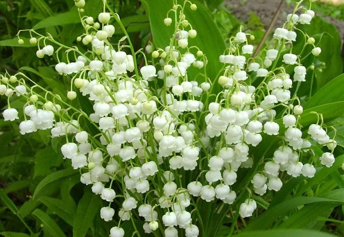
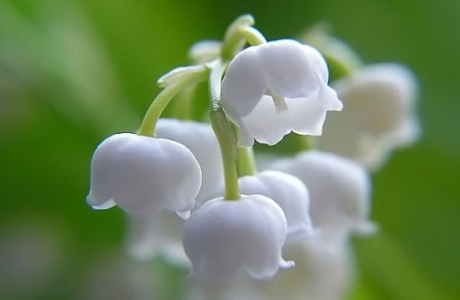

Настав уже останній місяць весни. Люди приємно сприйняли та насолодилися здалека пахнучим цвітом черемхи, і це задоволення наче їх заспокоїло. Але не так-то було. Вгледівши на сонячних галявинах ще не розпущений цвіт, ми розуміємо, що настає час цвітіння конвалії звичайної – найважливішої квітки весни, яка чарує всіх – від малого до великого – своїм ніжним екзотичним виглядом і природним ароматом, які неможливо порівняти з найкращими парфумами промислового виробництва.
Конвалія – це лісова квітка, яка росте у листяних, соснових, змішаних лісах і заплавних дібровах. Нажаль конвалія цвіте лише два тижня на рік, тому всім бажаючим помилуватися травневими конваліями слід поспішати до лісу. Біла квітка – мила, ніжна, непохитна, наче оніміла, вабить погляд і ніжно затамовує дихання, наповнюючи легені неповторним вишуканим ароматом. Тонкий стовбур із чарівними перлами-дзвіночками захищений зеленим парусом-листком.
Але є і інша сторона медалі, у столиці з’явилися перші торговці конваліями. І на даний момент в середньому – щодня продають близько 400 тисяч конвалій. Коштує ця краса від 5 до 25 грн. Квітами торгують на ринку, біля метро та в підземних переходах. Лісівники Київщини разом з екологами б’ють на сполох – кількість дикої конвалії в столичних зелених зонах за останні кілька років зменшилася на третину. І якщо їх знищуватимуть такими темпами, то квітка взагалі зникне. Звичайно мало кого турбує, що конвалії занесені до Червоної книги та переліку рослин, що підлягають особливій охороні на території Києва.
Ціна букетів залежно від пишності коливалася від 10 до 30 гривень. Продавці розповідають як проходить збір: Збирала рано вранці в лісі під Богуславом. Встала о 5 ранку, назбирала дві картаті сумки квітів і на електричці добралася до Києва. Є й ті, що торгують вирощеними квітами, але їх одиниці: Сьомий рік торгую конваліями і проблем з міліцією ще не мала, — каже продавець з Київщини. – У мене конвалії ростуть у дворі. Лісові рвати рука б не піднялася. Вони пахнуть краще за домашні. Але я мабуть одна така, що сама виростила біля дому і продаю. Для підтвердження ношу з собою фотографію конвалій біля хати. Решта везе лісові. Виривають цілими плантаціями. Хтось у столицю везе, хтось виходить на трасу продавати.
Ось уже роки й роки екологи, природоохоронці, лісівники у своїх регіонах країни стараються контролювати незаконне нищення червонокнижних рослин, наставити жителів і виховати свідомість у юних. Так, за порушення порядку придбання чи збуту об’єктів рослинного світу, занесених до Червоної книги України, передбачено відповідальність за статтею 88-1 КУпАП у вигляді штрафу на суму від 153 до 408 гривень. За погіршення середовища зростання червонокнижних рослин, їх знищення, пошкодження накладається штраф за статтею 90 КУпАП на громадян від 340 до 510 гривень. Окрім цього, за один екземпляр незаконно добутої рідкісної рослини, занесеної до Червоної книги України, передбачена відповідна компенсація за її знищення, яка залежить від її виду Зривання первоцвіту наносить невиправну шкоду українській фауні – адже рослини не встигають розмножуватися і їх, з кожним роком, стає все менше! Вже за кілька десятиліть наші улюблені перші весняні квіти можуть зникнути взагалі. Конвалія розмножується самосівом, але щоб з цього насіння виросла квітуча конвалія потрібно від 6-ти до 8-ми років! Тож, будь ласка, не купуйте конвалії у продавців квітами та не зривайте його у власних цілях! Ми не господарі природи, ми її складова, якщо ми не поважаємо її, означає ми не поважаємо себе. Отож бережіть неповторну українську природу!
Дослідження німецьких науковців 2003 року дало поштовх історії під назвою «феномен конвалії» (Lily of the Valley phenomenon). Припускали, що аромат квітки може привертати увагу сперматозоїди, оскільки вони можуть відчувати запах. Згодом цей факт був спростований.[3] До 1992 року конвалія була квітковою емблемою Югославії[4]. З 1967 року конвалія звичайна є національною квіткою Фінляндії
Збирають квітки й траву в період цвітіння, зрізуючи ножами або серпами, складають у кошики або мішки і відправляють зразу ж на місце сушіння або переробки. Сушать на горищах під залізним дахом або під наметами, розстилаючи сировину тонким шаром на папері або тканині і періодично помішують. Пакують у мішки або тюки вагою по 20, 50 кг. Зберігають не довше двох років.
Росте конвалія в мішаних і листяних лісах. Тіньовитривала рослина. Цвіте в травні. Розмножується насінням і вегетативно. Поширена майже по всій Україні, крім півдня степу і високогір'я Карпат. Заготівля можлива у Львівській, Івано-Франківській, Тернопільській, Закарпатській, Полтавській, Вінницькій, Кіровоградській, Черкаській, Чернівецькій, Житомирській, Київській, Сумській, на півночі Харківської та в інших областях. Часто утворює куртини і зарості. Запаси сировини значні, проте у зв'язку з хижацькою заготівлею на букети потребує охорони.